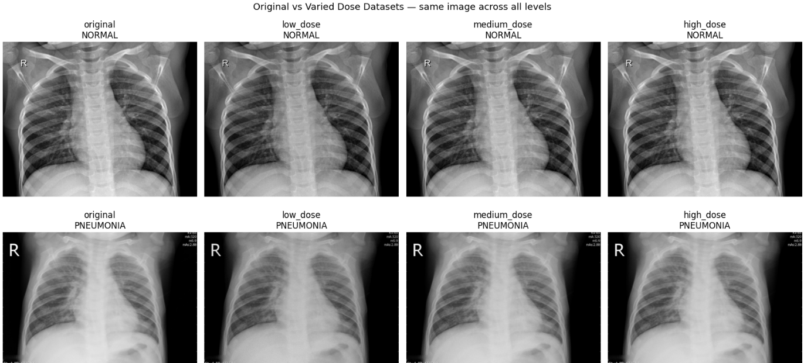

| Paper PDF |

|
Pneumonia is an infection of the lungs that is the leading cause of hospitalization in both adults and children. It is commonly diagnosed using chest x-rays by identifying white spots called infiltrates signifying fluid in the lungs. This study investigates the effect of physical imaging parameters like radiation dose, detector blur, and spatial resolution on the performance of a machine learning model trained to identify pneumonia in chest X-ray images. To effectively evaluate the impact of these parameters, we simulate changes in imaging conditions with mathematical manipulations. We then analyze how these conditions affect the model’s ability to classify pneumonia. By analyzing the model’s robustness to degraded image quality, we hope to gain insight into reasoning behind the model’s classification degradation and whether or not a sufficiently “good” model can be trained from “bad” images.
|
| Paper: |
Code and Data:
|